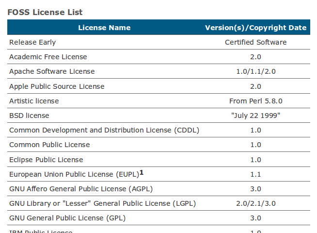

淺談商業公司額外附加的「例外許可條款」

【以增加條款相容性為主要目的】
就筆者目前所觀察到的現象，典型的例外條款是附隨於 GPL 這份主授權條款而存在。由於 GPL 規定衍生專案的整體仍然必須採用 GPL 繼續授權，若是衍生專案中包含了 MPL、EPL 這類具有部份授權拘束性的軟體元件，這時候就會產生授權方式不相容的狀況（註三），如此將會限制 GPL 類別元件與 MPL、EPL 類別元件的結合應用。但是對於這些商業公司來說，採用 GPL 來授權其軟體亦可能為公司帶來一定的利益，例如勸誘使用者為迴避授權拘束的爭議，而向其洽購商業授權版本，或是勸服社群開發者、能在專案進行商業化利用之後，在認同 Copyleft 理念的基礎下，繼續參與該 GPL 授權主元件的除錯與開發。所以在維持主元件採用 GPL 授權的前提下，部份商業公司有時會在基本的 GPL 授權方式之上，額外附加了其他的授權條件，例如允許 GPL 授權主元件的衍生程式中，有時可以選用非 GPL 的其他自由開源軟體授權方式，以降低直接繼受 GPL 授權方式所可能帶來的衝擊。
▲ 圖1 MySQL 5.5.25 自由開源版本中 README 的授權資訊
舉著名的自由開源資料庫 MySQL 為例，其自由開源版本採用 GPL-2.0 做為主授權條款，同時附隨有一份「自由開源授權除外規定 (FOSS License Exception)」（註四）。如圖1 所示，在程式源碼第一層目錄中的 README 檔案裡，開始的幾段文字清楚說明 MySQL 除了採用 GPL-2.0 授權之外，為了增加相容性，還有特殊例外規定，並請使用者自行到網站上瀏覽細節。

▲ 圖2 MySQL 自由開源授權除外規定中的條款清單
使用者連到指定的網頁後（註五），會看到一份簡短的除外規定，主要內容是一些名詞定義與額外附加的條件 (conditions)，最後則是一份授權條款清單。這份清單上羅列著數十份目前常見的自由開源軟體授權條款，這就是本文所說的例外條款清單。只要 MySQL 衍生程式符合這份除外規定所設立的條件，就可以不需要直接繼受 GPL-2.0 的授權方式，而可以改採例外清單上面的授權條款。在此一例外條款的影響下，我們較容易看到非 GPL 授權元件存在於 MySQL 衍生專案中的大融合景象，透過此一例外條款的機制，也直接增加了 MySQL 與其他非 GPL 授權的自由開源軟體元件結合應用的可能性。
除了 MySQL 之外，近年來應用相當普遍的 Sencha 系列專案也是一個好例子，其部份元件也是採用 GPL-3.0 搭配例外條款的方式來授權（註六），藉此提升 Sencha 與其他自由開源軟體的結合應用機率。
【實質上修改主授權條款的規定】
若是仔細閱讀這些例外條款的相關規定，會發現其中都會有類似的文字，表示這份例外條款的規定並沒有完全取代 GPL-2.0，而是增修了若干 GPL-2.0 的內容。許多人也許會感到疑惑，因為一般來說、適用 GPL 這類嚴格授權拘束性的自由開源授權條款時，應不能就其授權文字進行直接或是額外的修改，然而、直接考究 GPL 授權條款的文句，可以發現其嚴令要求的是「禁止向後手增添條款本身所無之額外限制（註七）」，而一般來說例外條款是「向後手增添條款本身所無之額外放寬」，所以許多施行者認為這樣的方式並不直接違反 GPL 授權條款的相關規定，例如知名的 GCC RUNTIME LIBRARY EXCEPTION（註八），也是在這樣的立場上被解讀。
所以、我們可以用修補程式 (patch) 與原軟體主元件的關係，來理解例外條款與主授權條款的關係：修補程式原則上單獨存在，並不會影響主元件的程式碼與架構，不過一旦將修補程式的內容實際加入到主元件中的話，軟體專案因此就被修改了；例外條款形式上獨立存在，它的存在並沒有直接修改原來主授權條款的任何文字，但若是想要了解軟體專案的授權細節，就必須要將例外條款的內容，與主授權條款進行對照並一併解讀，此時會發現，某些主授權條款的內容，實質上已經被例外條款的相關規定修改了。所以 MySQL 雖然採用 GPL-2.0 授權，依照 GPL-2.0 的預設規定，所有衍生專案的程式碼都必須要繼續採用 GPL-2.0 來授權，但因為 MySQL 的著作權利人另外制定了「例外條款」，並適用到 MySQL 這個專案上，因此 MySQL 資料庫的整體授權內容，實質上已經跟 GPL-2.0 的基本類型有所不同，使用者利用 MySQL 所產生的衍生專案，部份程式碼只要符合除外規定，就可以採用另外的自由開源軟體授權條款來進行釋出。
不過必須要注意，雖然依照例外條款的規定，使用者為衍生程式選擇授權方式的選項變多，但並不一定就代表主元件中的義務規定也必然因此被放寬，所以在利用此類專案的時候，必須要詳細了解授權條款的細部規定，以避免未來法律糾紛的產生。此外，還有一點需要加以說明：有權附加這類例外條款的人，通常是軟體著作權利人，或取得軟體著作權人額外同意的合法被授權人，而不能單單是軟體的使用者。這是因為一般使用者，所擁有的只是依照 GPL 相關規定對軟體元件進行使用、修改，與後續散布的權利，而並不能逾越 GPL 授權條款本身的規則，進一步修改授權條款的相關內容。所以本文所援引的例子，商業公司本身即為該專案完整的著作權利人，站在得以雙重授權該專案的地位上，來為這些專案附加例外條款。而這些商業公司本身都有一套完整的著作權管理制度，讓公司可以擁有該專案完整、合法的著作權利或是授權地位，來作為持續維持這些例外條款的基礎（註九）。
【從整體面理解授權內容以靈活應用】
例外條款本身的內容相當簡短，軟體權利人也因此為使用者提供了一個較彈性的選擇方案，但是在其簡短與多選擇的外表下，有可能隱藏著複雜的授權運作機制，這是因為該專案的授權政策，必須要併合主授權方式與例外條款一同理解才能夠窺其全豹，有時會讓該專案整體的授權內容，比起基本款的 GPL 授權模式更加複雜難懂。所以在利用到有附加例外條款的商用自由開源軟體專案時，仍是必須從整體面來多加注意例外條款影響了哪些主授權條款的內容，對於使用者的權利又產生了哪些更動，如此才可以靈活運用這些例外條款所帶來的應用彈性。
註一：關於自由開源軟體雙重授權模式的進一步說明，可參考：林誠夏，自由軟體的商業應用模式（下）－雙重授權篇，https://www.openfoundry.org/tw/legal-column-list/1056；葛冬梅，自由／開放源碼軟體的多重授權，https://www.openfoundry.org/tw/legal-column-list/506。
註二：關於授權拘束性詳細的說明與相關影響，請參閱：林誠夏，GPL 條款對於衍生程式的判定標準與其授權拘束性的擴散範圍（上），https://www.openfoundry.org/tw/legal-column-list/8446；林誠夏，GPL 條款對於衍生程式的判定標準與其授權拘束性的擴散範圍（下），https://www.openfoundry.org/tw/legal-column-list/8447。
註三：關於自由開源軟體授權條款間的相容性與衝突狀況，進一步詳細說明請參考：林珈宏，從 Copyleft 看自由開源軟體授權相容性 ，https://www.openfoundry.org/tw/legal-column-list/8710。
註四：相關資訊請參考下列網頁：MySQL :: MySQL Editions：https://www.mysql.com/products/；MySQL :: MySQL Community Edition：https://www.mysql.com/products/community/；MySQL :: FOSS License Exception，https://www.mysql.com/about/legal/licensing/foss-exception/。
註五：MySQL 的「自由開源授權條款除外規定 (FOSS License Exception)」：https://www.mysql.com/about/legal/licensing/foss-exception/。
註六：Sencha 公司針對應用與開發這兩種不同的利用方式，分別制定了兩份不同的例外許可授權條款：Exception for Applications，https://www.sencha.com/legal/open-source-faq/open-source-license-exception-for-applications/；Exception for Development，https://www.sencha.com/legal/open-source-faq/open-source-license-exception-for-development/。
註七：GPL-2.0 此項義務性規定原文為："You may not impose any further restrictions on the recipients' exercise of the rights granted herein." GPL-3.0 為 "You may not impose any further restrictions on the exercise of the rights granted or affirmed under this License."
註八： GCC RUNTIME LIBRARY EXCEPTION 的條款內容原文請見：https://www.gnu.org/licenses/gcc-exception-3.1.html；其運作說明與問答集請見：https://www.gnu.org/licenses/gcc-exception-faq.html。
註九：也因此本文所討論的這種例外條款，並不是根據 GPL-3.0 第 7 條附加條款 (Additional Terms) 而產生的，在此一併說明。